My Top 3 Places
Yosemite
Yosemite is by far the prettiest place I have ever been to. I have been backpacking, camping, and fishing there, and I hope to go climbing and backcountry skiing soon. It is huge, and there are so many places to see. At the end of every trip, we go to the valley. It is the "wallpaper" location. I think it's stunning, but it is definitely very crowded and noisy. I love the view of El Cap and Half Dome as you drive down. It's super cool how all of these land marks live in the same place - El Cap, Half Dome, California Falls, Glacier Point...
My favorite hike I have ever done in Yosemite is from Tuolomne Meadows to Yosemite Valley. If you do it in that direction, it is pretty much all downhill. It is a popular trail, so there are neat campsites with fire rings. The views are fantastic - the trail follows tuolomne river and waterfalls. As you get closer to the valley, the mountain views are super cool.
The best part of the trail though is the fishing. It is a hot spot for trout, and I caught the most brook trout. They are super fun fish to catch. I am used to saltwater fishing and catching heavier fish, so it took me a minute to get used to not tugging on the rod. Trout are also an underated meal. If you gut it, rub some olive oil on it, add some salt and pepper, and roast it over the fire, it tastes insane. I was also hungry so it could just be that.
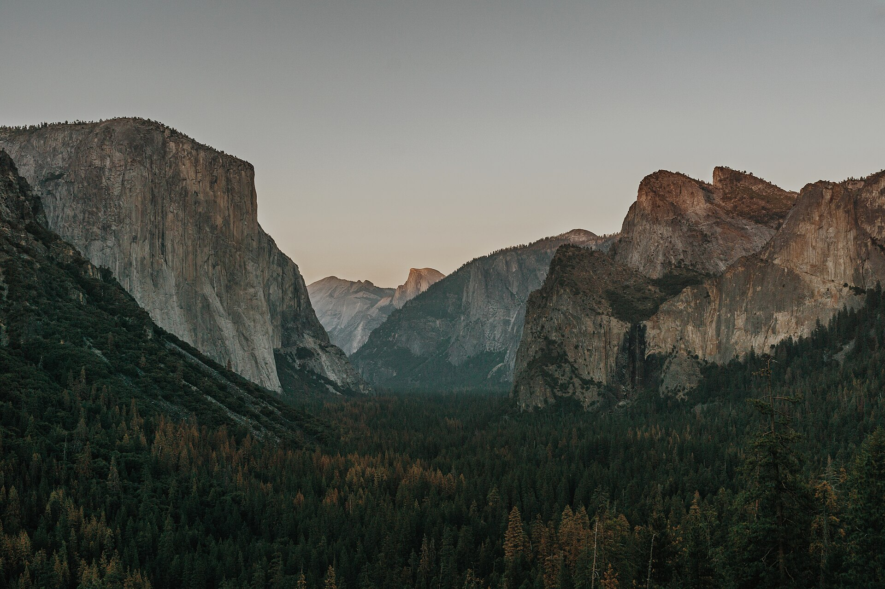
.jpg){kind=link}
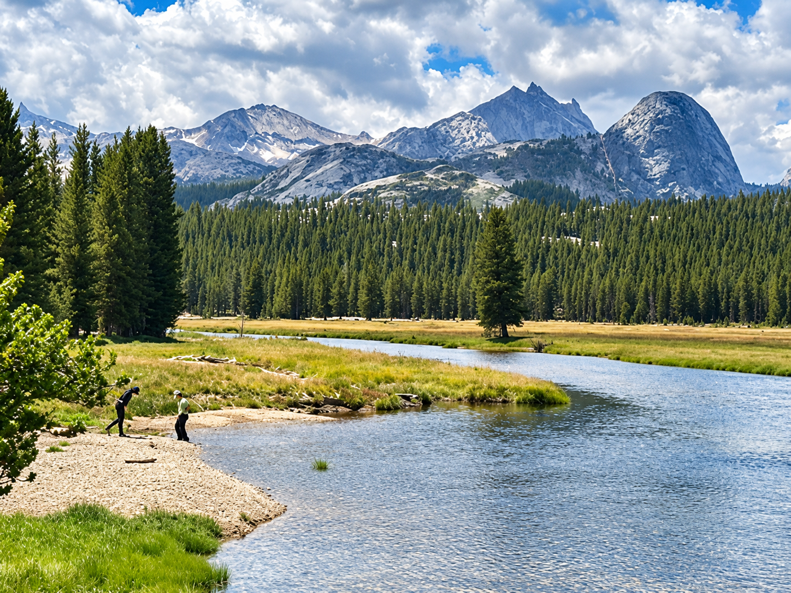
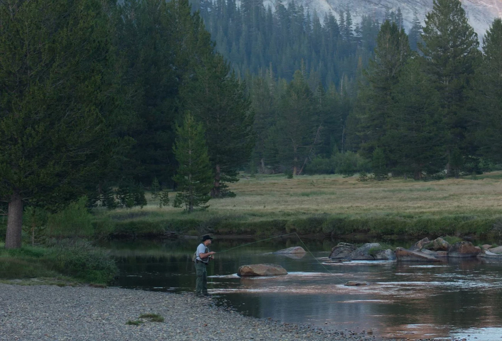
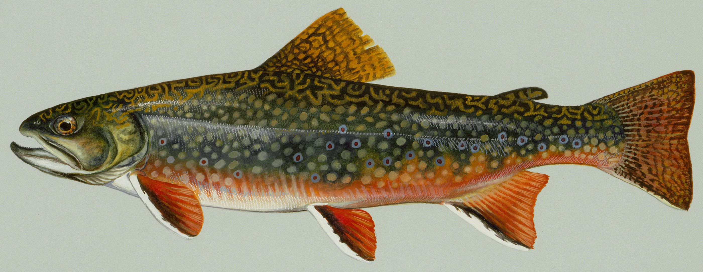

Steamboat Springs
Probably the biggest reason I love Steamboat is because I've been going since I was 4 years old. My family and a lot of my childhood friends all go together in the winter. This place is amazing. The runs are long and you can weave in and out of them. The tree skiing is world class, but they also have small chutes off of morningside that are very fun.
My favorite area is probably anywhere off the top of Morningside. It's at the back of the mountain, so there is less people and for some reason, I feel like it dumps the most back there. You can almost always find a secret stash of untouched powder there.
I had the best time growing up skiing there because I feel like the terrain really allows you to grow comfortably and still be challenged as a skiier. It's not like Snowbird where one wrong step and your falling down the face of a cliff. That allows you to explore the mountain freely, and still get into harder runs if you want, which is really special.
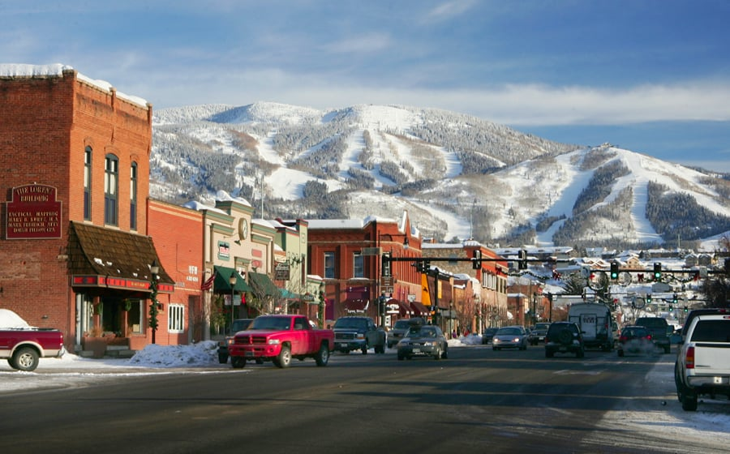

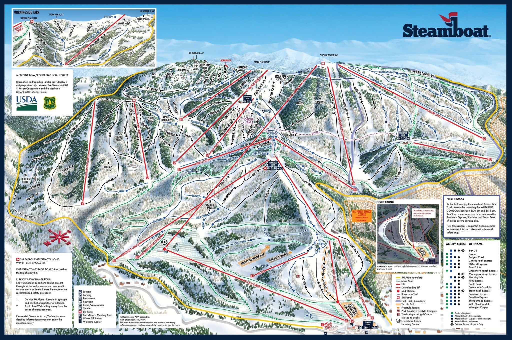
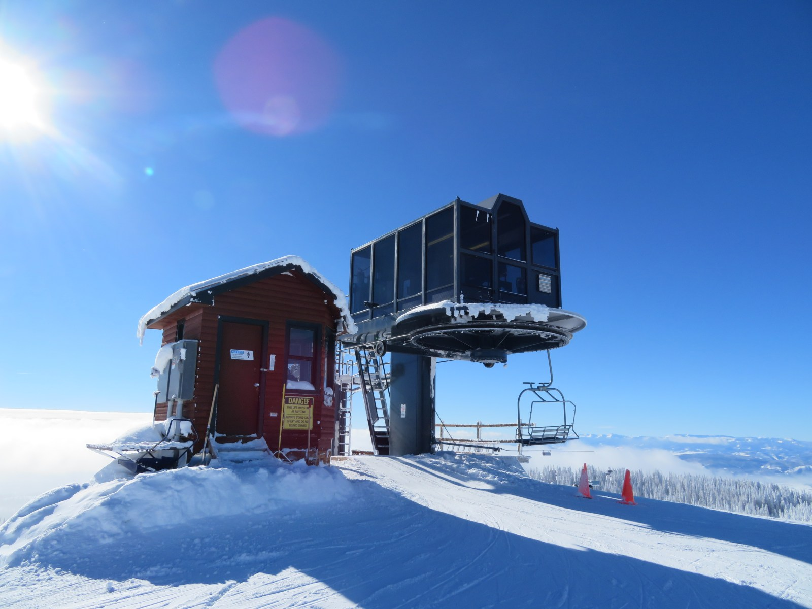
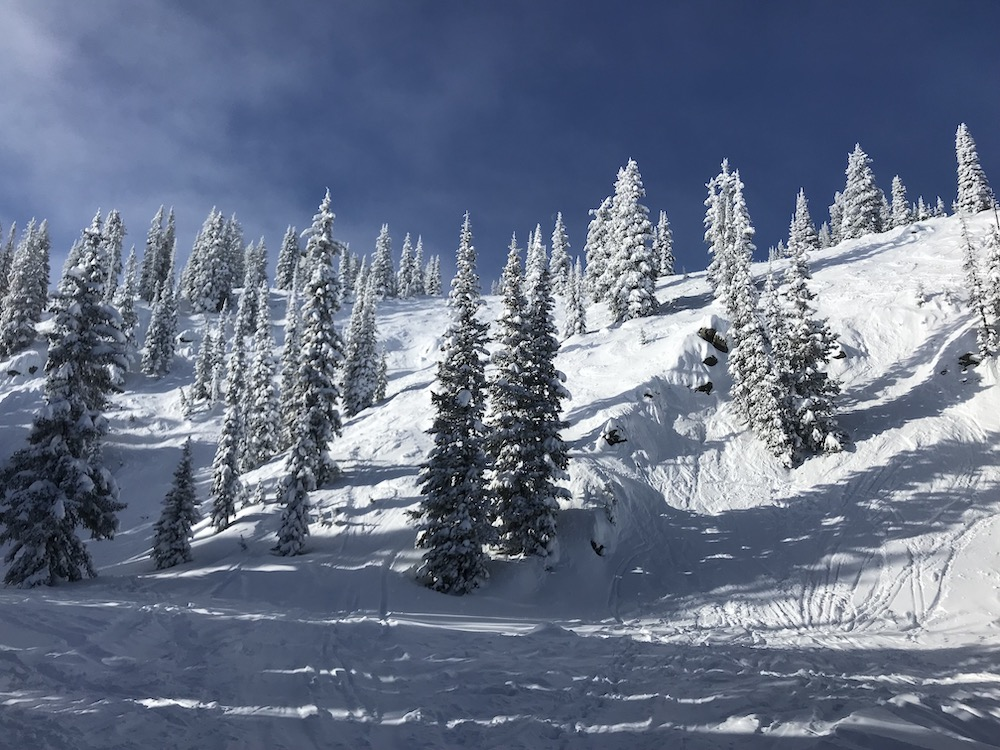
San Diego
I am very biased because I am from San Diego but I genuinely think it's the best city to live in. It is pretty big, so there are a lot of things to do and explore. I think North County is the prettiest, as shown by my photo of Del Mar Beach. The surfing is great, my favorite spot is at Cardiff under the rocks because the waves are slow and rolly, and it has a nice break.
The weather is the best part of San Diego, and I never realized how awesome it is to be in 72 degree weather pretty much year round until I had to leave it.
Another thing that makes San Diego the best place ever is the insane food. You can literally find any type of food in San Diego and it will be insanely good. San Diego is probably known for its Mexican food though, and my favorite mexican place is called The Taco Stand. It is so so good. Convoy is the spot for asian food - sushi, boba, dim sum, hot pot, vietnamese, literally anything. I love San Diego.
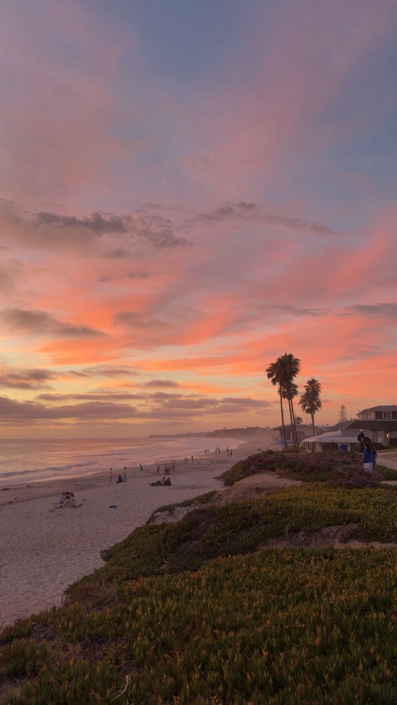
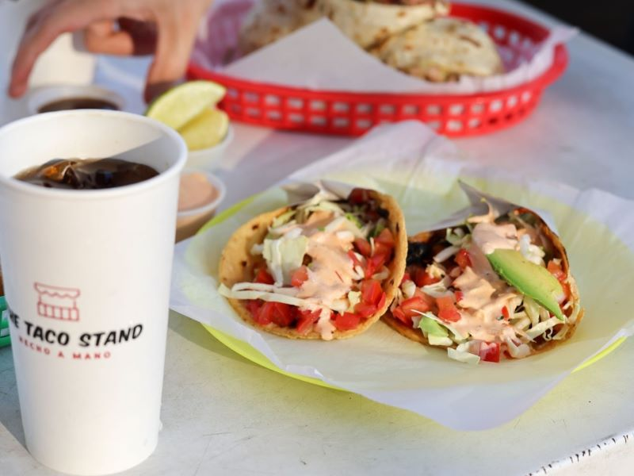
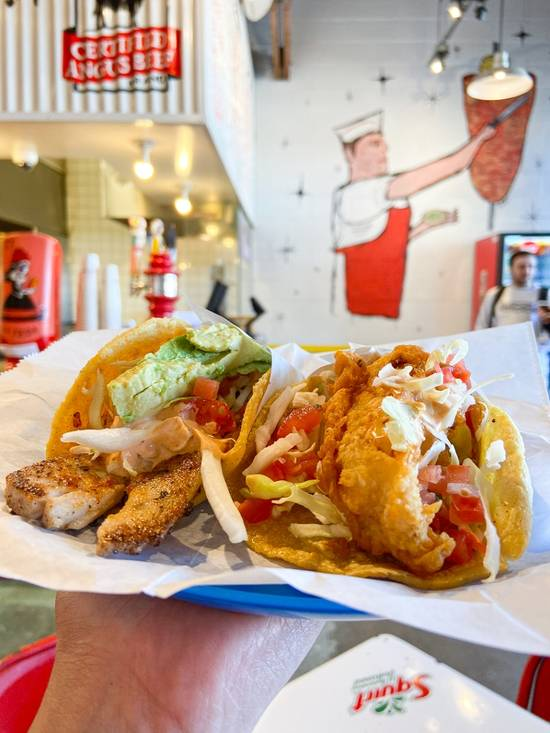
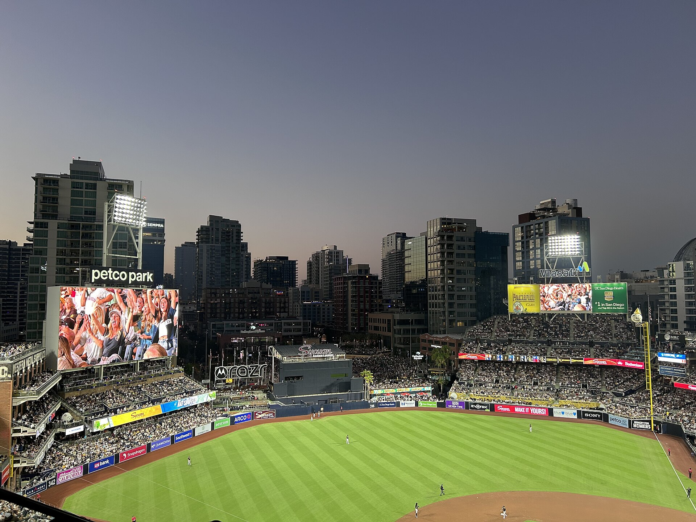